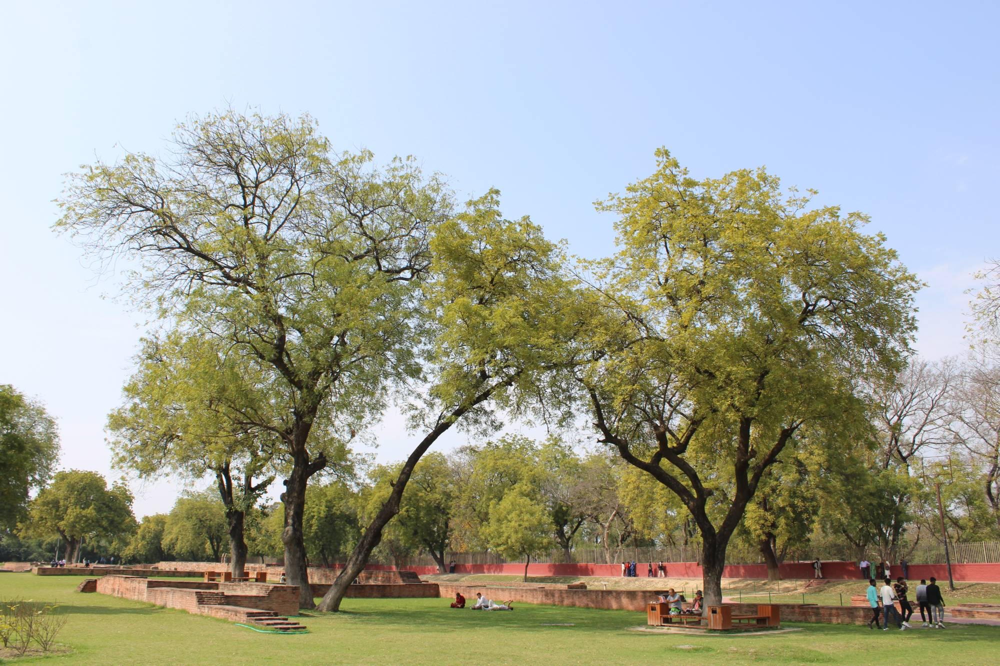

October 2026 · Reflections
Wisps of Vitality
Mind cleared of thoughts demands
Eyes opened to sanctified lands
Empty ego from envy's grasp
Purify soul in nature's lap
Return as the living, breathing creature
Witnessing life within and without
Wisps of vitality
Petals of awe
Can you see the spirit?
Falling from the sky
Rolling across the land
Growing through the earth
Whispering along the wind
Reaching out
Waiting, for you
